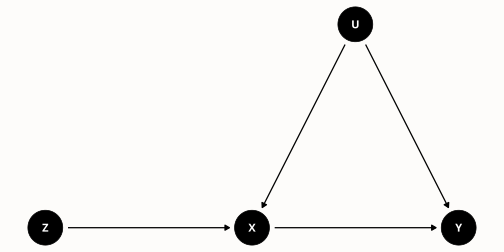

Causal inference & identification28 August 20258 minPart II of II
A Good Instrument is a Bad Control: Part II
At a recent seminar dinner the conversation drifted to causal inference, and I mentioned my dream of one day producing a Lady Gaga parody music video called “Bad Control”.1 A lively discussion of bad controls ensued, during which I offered one of my favorite examples: a good instrument is a bad control. To summarize that earlier post: including a valid instrumental variable as a control variable can only amplify the bias on the coefficient for our endogenous regressor of interest. When used as a control, the instrument “soaks up” the good (exogenous) variation in the endogenous regressor, leaving behind only the bad (endogenous) variation. This is the opposite of what happens in an instrumental variables regression, where we use the instrument to extract only the good variation in the endogenous regressor. More generally, a “bad control” is a covariate that we shouldn’t adjust for when using a selection-on-observables approach to causal inference.
1 I have a very rich inner life.
Upon hearing my IV example, my colleague immediately asked “but what about the coefficient on the instrument itself?” This is a great question and one I hadn’t thought about before. Today I’ll give you my answer.
This post is a sequel, so you may find it helpful to glance at my earlier post before reading further. At the very end of the post I’ll rely on a few basic ideas about directed acyclic graphs (DAGs). If this material is unfamiliar, you may find my treatment effects slides helpful. With these caveats, I’ll do my best to keep this post relatively self-contained.
1 Recap of Part I
Suppose that \(X\) is our endogenous regressor of interest in the linear causal model \(Y = \alpha + \beta X + U\) where \(\text{Cov}(X,U) \neq 0\) but \(\text{Cov}(Z,U) = 0\), and where \(Z\) is an instrumental variable that is correlated with \(X\). Now consider the population linear regression of \(Y\) on both \(X\) and \(Z\), namely \[
Y = \gamma_0 + \gamma_X X + \gamma_Z Z + \eta
\] where the error term \(\eta\) satisfies \(\text{Cov}(X,\eta) = \text{Cov}(Z,\eta) = \mathbb{E}(\eta) = 0\)by construction. Further define the population linear regression of \(X\) on \(Z\), namely \[
X = \pi_0 + \pi_Z Z + V
\] where the error term \(V\) satisfies \(\text{Cov}(Z,V) = \mathbb{E}(V) = 0\)by construction. Finally, define the population linear regression of \(Y\) on \(X\) as \[
Y = \delta_0 + \delta_X X + \epsilon, \quad \text{Cov}(X,\epsilon) = \mathbb{E}(\epsilon) = 0.
\] Using this notation, the result from my earlier post can be written as \[
\delta_X = \beta + \frac{\text{Cov}(X,U)}{\text{Var}(X)}, \quad \text{and} \quad \gamma_X = \beta + \frac{\text{Cov}(X,U)}{\text{Var}(V)}.
\] To understand what this tells us, notice that, using the “first-stage” regression of \(X\) on \(Z\), we can write \[
\text{Var}(V) \equiv \text{Var}(X - \pi_0 - \pi_Z Z) = \text{Var}(X) - \pi_Z^2 \text{Var}(Z).
\] This shows that whenever \(Z\) is a relevant instrument \((\pi_Z \neq 0)\), we must have \(\text{Var}(V) < \text{Var}(X)\). It follows that \(\gamma_X\) is more biased than \(\delta_X\): adding \(Z\) as a control regressor only makes our estimate of the effect of \(X\)worse!2
2 The right way to learn \(\beta\) by regressing \(Y\) on \(X\) and “something else” is the control function approach described in this post. Rather than adding \(Z\), we add \(V = X - \pi_0 - \pi_Z Z\) as a control.
2 What about \(\gamma_Z\)?
So if \(Z\) soaks up the good variation in \(X\), what about the coefficient \(\gamma_Z\) on the instrument \(Z\)? Perhaps this coefficient contains some useful information about the causal effect of \(X\) on \(Y\)? To find out, we’ll use the FWL Theorem as follows: \[
\gamma_Z = \frac{\text{Cov}(Y,\tilde{Z})}{\text{Var}(\tilde{Z})}
\] where \(Z = \lambda_0 + \lambda_X X + \tilde{Z}\) is the population linear regression of \(Z\) on \(X\). This is the reverse of the first-stage regression of \(X\) on \(Z\) described above. Here the error term \(\tilde{Z}\) satisfies \(\mathbb{E}(\tilde{Z}) = \text{Cov}(\tilde{Z}, X) = 0\)by construction. Substituting the causal model gives \[
\text{Cov}(Y, \tilde{Z}) = \text{Cov}(\alpha + \beta X + U, \tilde{Z}) = \beta \text{Cov}(X,\tilde{Z}) + \text{Cov}(U,\tilde{Z}) = \text{Cov}(U, \tilde{Z})
\] since \(\text{Cov}(X,\tilde{Z}) = 0\) by construction. Now, substituting the definition of \(\tilde{Z}\), \[
\text{Cov}(U, \tilde{Z}) = \text{Cov}(U, Z - \lambda_0 - \lambda_X X) = \text{Cov}(U,Z) - \lambda_X \text{Cov}(U,X) = -\lambda_X \text{Cov}(X,U)
\] since \(\text{Cov}(U,Z) = 0\) by assumption. We can already see that \(\gamma_Z\) is not going to help us learn about \(\beta\). First of all, the term containing \(\beta\) vanished; second of all, the term that remained is polluted by the endogeneity of \(X\), namely \(\text{Cov}(X,U)\).
Still, let’s see if we can get a clean expression for \(\gamma_Z\). So far we have calculated the numerator of the FWL expression, showing that \(\text{Cov}(Y,\tilde{Z}) = -\lambda_X \text{Cov}(X,U)\). The next step is to calculate \(\text{Var}(\tilde{Z})\): \[
\text{Var}(\tilde{Z}) = \text{Var}(Z - \lambda_0 - \lambda_X X) = \text{Var}(Z) + \lambda_X^2 \text{Var}(X) - 2\lambda_X \text{Cov}(X,Z).
\] Since \(\lambda_X \equiv \text{Cov}(X,Z)/\text{Var}(X)\), our expression for \(\text{Var}(\tilde{Z})\) simplifies to \[
\text{Var}(\tilde{Z}) = \text{Var}(Z) - \lambda_X \text{Cov}(X,Z)
\] so we have discovered that: \[
\gamma_Z = \frac{-\lambda_X \text{Cov}(X,U)}{\text{Var}(Z) - \lambda_X \text{Cov}(X,Z)}.
\]
Call me old-fashioned, but I really don’t like having \(\lambda_X\) in that expression. I’d feel much happier if we could find a way to re-write this in terms of the more familiar IV first-stage coefficient \(\pi_Z\). Let’s give it a try! Let’s use my favorite trick of multiplying by one: \[
\lambda_X \equiv \frac{\text{Cov}(X,Z)}{\text{Var}(X)} = \frac{\text{Cov}(X,Z)}{\text{Var}(X)} \cdot \frac{\text{Var}(Z)}{\text{Var}(Z)} = \pi_Z \cdot \frac{\text{Var}(Z)}{\text{Var}(X)}.
\] Substituting for \(\lambda_X\) gives \[
\gamma_Z = \frac{-\pi_Z \frac{\text{Var}(Z)}{\text{Var}(X)} \text{Cov}(X,U)}{\text{Var}(Z) - \pi_Z \frac{\text{Var}(Z)}{\text{Var}(X)} \text{Cov}(X,Z)} = \frac{-\pi_Z \text{Cov}(X,U)}{\text{Var}(X) - \pi_Z^2 \text{Var}(Z)}.
\] We can simplify this even further by substituting \(\text{Var}(V) = \text{Var}(X) - \pi_Z^2 \text{Var}(Z)\) from above to obtain \[
\gamma_Z = -\pi_Z \frac{\text{Cov}(X,U)}{\text{Var}(V)}.
\] And now we recognize something from above: \(\text{Cov}(X,U)/\text{Var}(V)\) was the bias of \(\gamma_X\) relative to the true causal effect \(\beta\)! This means we can also write \(\gamma_Z = -\pi_Z (\gamma_X - \beta)\).
3 A Little Simulation
We seem to be doing an awful lot of algebra on this blog lately. To make sure that we haven’t made any silly mistakes, let’s check our work using a little simulation experiment taken from my earlier post. Spoiler alert: everything checks out!
set.seed(1234)n <-1e5# Simulate instrument (z)z <-rnorm(n)# Simulate error terms (u, v)library(mvtnorm)Rho <-matrix(c(1, 0.5, 0.5, 1), 2, 2, byrow =TRUE)errors <-rmvnorm(n, sigma = Rho)# Simulate linear causal modelu <- errors[, 1]v <- errors[, 2]x <-0.5+0.8* z + vy <--0.3+ x + u# Regression of y on x and zgamma <-lm(y ~ x + z) |>coefficients()gamma
(Intercept) x z
-0.5471213 1.5018705 -0.3981116
# First-stage regression of x on zpi <-lm(x ~ z) |>coefficients()pi
(Intercept) z
0.5020338 0.7963889
# Compare two different expressions for gamma_Z to the estimate itselfc(gamma_z =unname(gamma[3]),version1 =unname(-0.8*cov(x, u) /var(v)),version2 =unname(-pi[2] * (gamma[2] -1)))
So far all we’ve done is horrible, tedious algebra and a little simulation to check that it’s correct. But in fact there’s some very interesting intuition for the results we’ve obtained, intuition that is deeply connected to the idea of a bad control in a directed acyclic graph (DAG).
In the model we’ve described above, \(Z\) has a causal effect on \(Y\). This is because \(Z\) causes \(X\) which in turn causes \(Y\). Because \(Z\) is an instrument, its only effect on \(Y\) goes through \(X\). The unobserved confounder \(U\) is a common cause of \(X\) and \(Y\) but is unrelated to \(Z\). Even if you’re not familiar with DAGs, you will probably find this diagram relatively intuitive:
library(ggdag)library(ggplot2)iv_dag <-dagify( Y ~ X + U, X ~ Z + U,coords =list(x =c(Z =1, X =3, U =4, Y =5),y =c(Z =1, X =1, U =2, Y =1) ))iv_dag |>ggdag() +theme_econblog_void()

In the figure, an arrow from \(A\) to \(B\) means that \(A\) is a cause of \(B\). A causal path is a sequence of arrows that “obeys one-way signs” and leads from \(A\) to \(B\). Because there is a directed path from \(Z\) to \(Y\), we say that \(Z\) is a cause of \(Y\). To see this using our regression equations from above, substitute the IV first-stage into the linear causal model to obtain \[
\begin{aligned}
Y &= \alpha + \beta X + U = \alpha + \beta (\pi_0 + \pi_Z Z + V) + U\\
&= (\alpha + \beta \pi_0) + \beta \pi_Z Z + (\beta V + U).
\end{aligned}
\] This gives us a linear equation with \(Y\) on the left-hand side and \(Z\)alone on the right-hand side. This is called the “reduced-form” regression. Since \(\text{Cov}(Z,U)=0\) by assumption and \(\text{Cov}(Z,V) = 0\) by construction, the reduced-form is a bona fide population linear regression. That means that regressing \(Y\) on \(Z\) will indeed give us a slope that equals \(\pi_Z \times \beta\). To see why the slope is a product, recall that \(\pi_Z\) is the causal effect of \(Z\) on \(X\), the \(Z\rightarrow X\) arrow in the diagram, while \(\beta\) is the causal effect of \(X\) on \(Y\), the \(X \rightarrow Y\) arrow in the diagram. Because the only way \(Z\) can influence \(Y\) is through \(X\), it makes sense that the causal effect of \(Z\) on \(Y\) is the product of these two effects.
So now we see that the reduced-form coefficient \(\pi_Z \beta\) is indeed a causal effect. How does this relate to \(\gamma_Z\)? Remember that \(\gamma_Z\) was the coefficient on \(Z\) in a regression of \(Y\) on \(Z\) and \(X\), in other words a regression that adjusted for \(X\). So is adjusting for \(X\) the right call? Absolutely not! There are no back-door paths between \(Z\) and \(Y\).3 This means that we don’t have to adjust for anything to learn the causal effect of \(Z\) on \(Y\). In fact adjusting for \(X\) is a mistake for two different reasons.
3 The rest of this post relies on some DAG basics. If anything here is unfamiliar, check out my treatment effects slides.
First, \(X\) is a mediator on the path \(Z \rightarrow X \rightarrow Y\). If there were no confounding, i.e. if \(\text{Cov}(X,U) = 0\) so there is no \(U\rightarrow X\) arrow, adjusting for \(X\) would block the only causal path from \(Z\) to \(Y\). We can see this in our equations from above. Suppose that \(\text{Cov}(X,U) = 0\). Then we have \(\gamma_X = \beta\) but \(\gamma_Z = 0\)! There was a dead giveaway in our derivation: the formula for \(\gamma_Z\) doesn’t depend on \(\beta\) at all.
Second, because there is confounding, adjusting for \(X\) creates a spurious association between \(Z\) and \(Y\) through the back-door path \(Z \rightarrow X \leftarrow U \rightarrow Y\). Because \(X\) is a collider on the path \(Z \rightarrow X \leftarrow U \rightarrow Y\), this path starts out closed. Adjusting for \(X\)opens this back-door path, creating a spurious association between \(Z\) and \(Y\). To see why this is the case, suppose that \(\beta = 0\). In this case there is no causal effect of \(X\) on \(Y\) and hence no causal effect of \(Z\) on \(Y\). But if \(\text{Cov}(X,U) \neq 0\), then we have \(\gamma_Z \neq 0\)!
So if you want to learn the causal effect of \(Z\) on \(Y\), it’s not just that \(X\) is a bad control; it’s a doubly bad control! Without adjusting for \(X\), everything is fine: the reduced-form regression of \(Y\) on \(Z\) gives us exactly what we’re after.4
4 Here I assume that we’re interested in the \(Z\rightarrow Y\) causal effect. To obtain the \(X\rightarrow Y\) effect we would need to use an instrumental variables regression.
5 Epilogue
When I showed this post to another colleague he asked me whether there is any way to learn about \(\beta\) by combining\(\gamma_Z\) and \(\gamma_X\). The answer is no: the regression of \(Y\) on \(X\) and \(Z\) alone doesn’t contain enough information. Since \[
\gamma_Z = -\pi_Z \frac{\text{Cov}(X,U)}{\text{Var}(V)} \quad \text{and} \quad \gamma_X = \beta + \frac{\text{Cov}(X,U)}{\text{Var}(V)}
\] we can rearrange to obtain the following expression for \(\beta\): \[
\beta = \gamma_X + \frac{\gamma_Z}{\pi_Z}
\] which we can verify in our little simulation example as follows:
gamma[2] + gamma[3]/pi[2]
x
1.001975
Thus, in order to solve for \(\beta\), we need to run the first-stage regression to learn \(\pi_Z\).